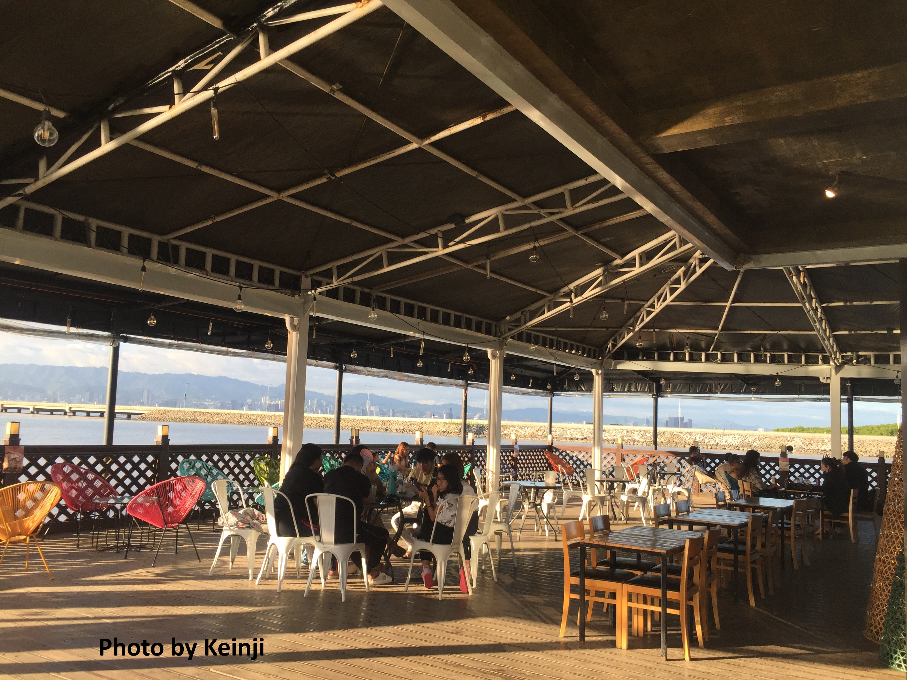

EVERYTHING YOU NEED TO KNOW ABOUT THE 10,000 ROSES

One of the tourist attractions in Cordova is the 10,000 Roses Café & More. The atmosphere was tranquil, with the gentle rustle of the wind and the distant sound of the sea adding to the serenity.
Walking among the roses was a surreal experience. Each rose, while identical in shape and size, seemed to possess its own unique glow. The white roses against the backdrop of the darkening sky created an enchanting contrast that was both beautiful and mesmerizing both day and night.
The 10,000 Roses Cafe in Cordova is more than just a cafe. It’s a magical place that offers a unique sensory experience. As I left, I took one last look at the glowing roses, their light reflecting off the calm sea, and I knew I would carry the memory of this place with me forever.
The 10000 Roses Cafe is a small concrete structure located at the end of the Cordova Tourism Center.
The two-storey cafe has an air-conditioned area as well as huge spaces for al-fresco diners and guests.
The cafe, which rocks a modern industrial look, also has a roof deck which offers an amazing view of the ocean, the Cordova mangrove forest, and the ever-changing skyline of Metro Cebu.